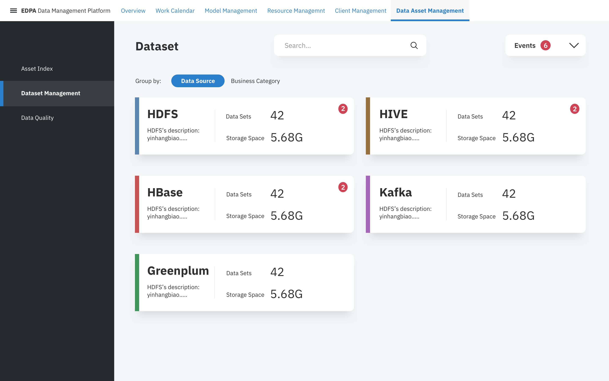
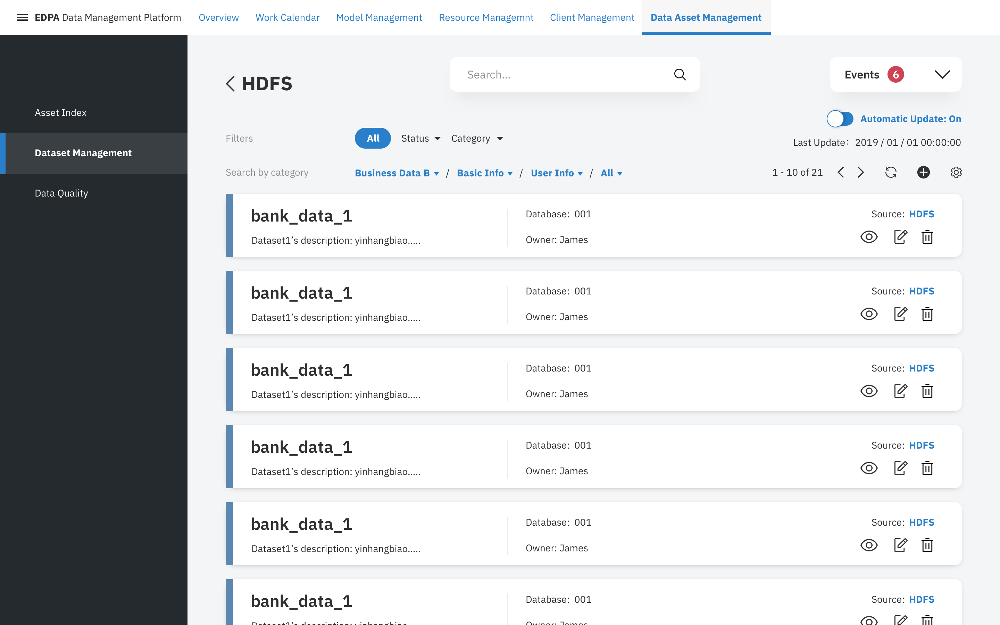
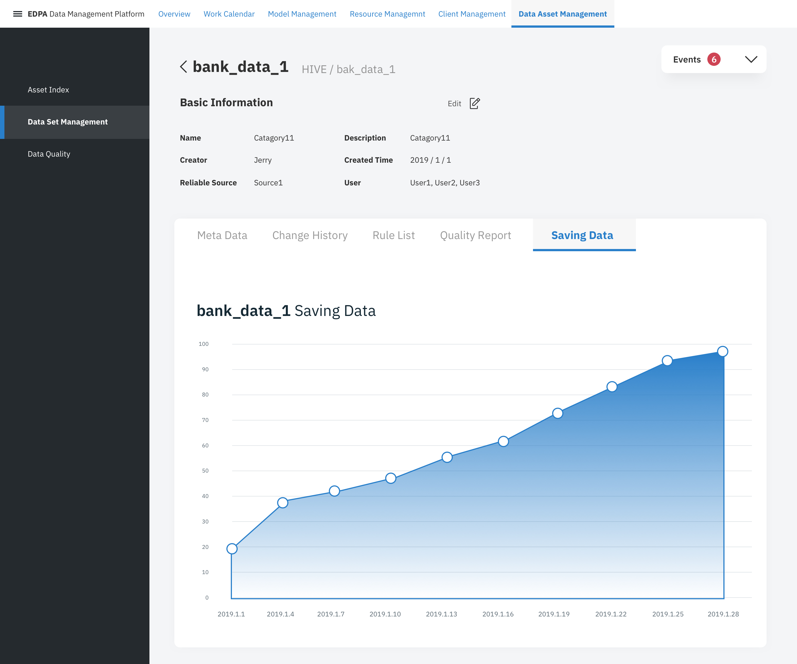
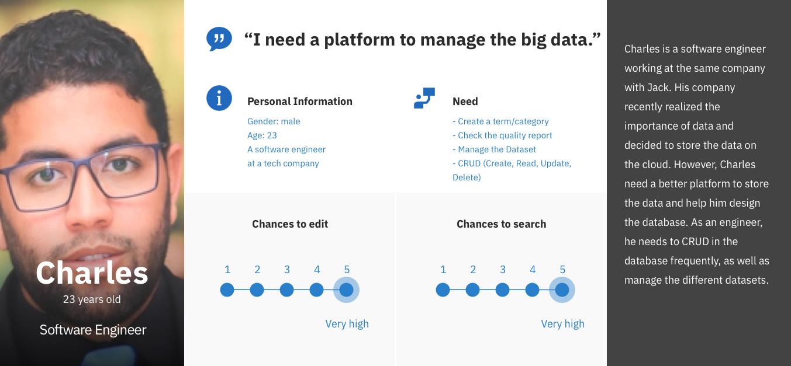
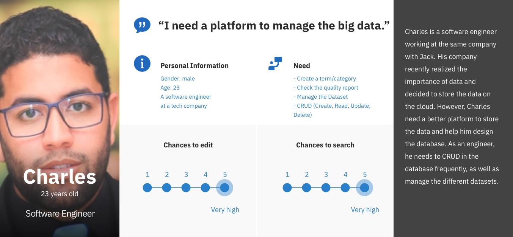

Dataset Management
Datasets for engineers
It took me a while to persuade engineers in my team to implement the Card-Based Design, by Competitor
Analysis and A/B Testing. From my opinion, when there's only a few of the elements and we don't have to
sort them, Cards are better than tables. Different datasets are differentiated by colors, which is clear
and makes the design style more vivid.

Detailed Dataset
Turning on / off the automatic update is important. Therefore, the according button was designed blue and
other buttons are icons from IBM design language and are greyscale. To be consistent, I also used
card-based design on this page.


Pop-up Window
In order to help users better focus on what they should do, I used background blur and a wider color band
for the pop-up window.


 
